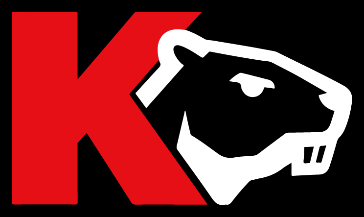
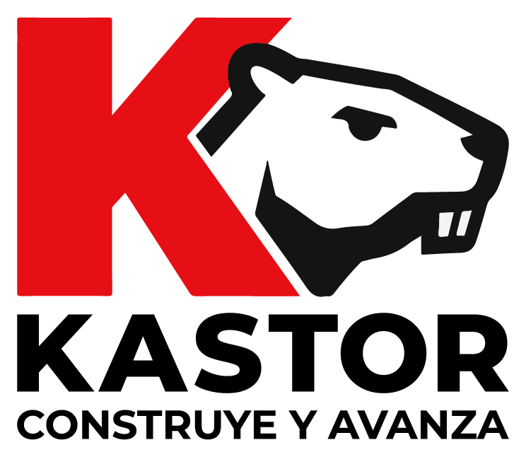
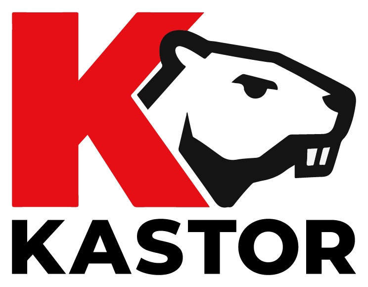
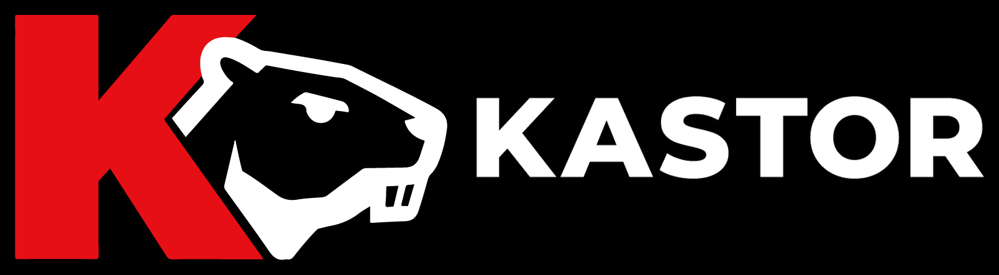
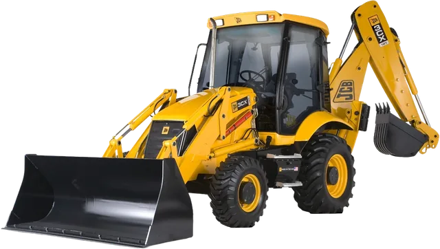
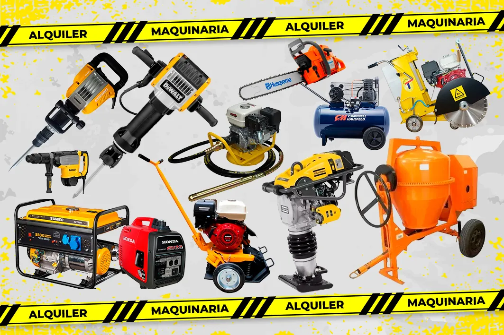
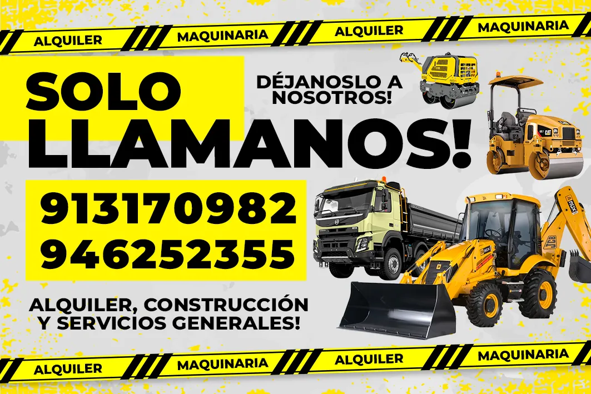

Alquiler
Esta guía explica cómo se ve, cómo habla y cómo se usa la marca Kastor. Sirve para que todo lo que hagamos —web, redes, tarjetas, uniformes y vehículos— se reconozca al instante.
Kastor alquila maquinaria liviana y pesada y presta servicios generales de construcción. Nuestro foco es que cualquier persona, desde quien remodela su casa hasta el maestro de obra, consiga la máquina correcta sin complicarse.
Hacer que construir sea más fácil, rápido y seguro para todos.
Ser la empresa de alquiler de maquinaria más confiable y cercana del Perú.
“Déjanoslo a nosotros”: te asesoramos, te llevamos la máquina y te enseñamos a usarla.

El castor es el constructor de la naturaleza. Corta, carga, levanta diques y transforma su terreno con esfuerzo y precisión, igual que nuestras máquinas. Es fuerte y trabajador, pero también cercano y simpático. La K roja le da energía y empuje: el castor avanza junto a ella.
Siempre se usa uno de estos archivos originales. Nunca se redibuja ni se escribe “Kastor” con otra letra para reemplazarlo.

Completo con lema · tamaños grandes
Sin lema · tamaños medianos
Horizontal negativo Isotipo · ícono, favicon, perfilSilueta castor · decorativo
Isotipo · ícono, favicon, perfilSilueta castor · decorativoEl lema “Construye y avanza” es parte del logo, pero sus letras son pequeñas. Si el logo se usa chico, el lema se vuelve ilegible y el logo se ve descuidado. Por eso el lema solo va cuando hay espacio.
💡 Cuando el lema no va en el logo, puedes escribirlo aparte como texto normal (por ejemplo, en un título), en Montserrat y a un tamaño legible.
Espacio de respeto (X): alrededor del logo deja libre, como mínimo, la altura de la letra “K” de la palabra KASTOR. Ningún texto o imagen puede entrar en esa zona.
Usa el logo principal sobre blanco o gris concreto.
Usa la versión negativa sobre negro. Así el castor se ve blanco y nítido.
Coloca el logo dentro de una placa blanca o negra, nunca directamente sobre una foto con mucho detalle.
Estos errores hacen que la marca se vea descuidada y poco confiable. Evítalos siempre.
No estirar ni aplastar
No rotar ni inclinar
No cambiar los colores
No usar sobre rojo
No poner sobre fotos cargadas
No agregar sombras ni efectos
No usar transparente
No reescribir con otra letra
El rojo da energía y llama a la acción, el negro transmite fuerza y el amarillo viene de la señalización de obra. Toca un color para copiar su código.
El rojo es el protagonista, pero se usa en dosis: botones, títulos destacados y la K. El amarillo es solo un acento, como la cinta de seguridad.
Una sola familia tipográfica, gratuita (Google Fonts), sólida y muy legible en celular. Los títulos van en mayúsculas y peso Black. Los textos van en peso Regular o Medium.
ABCDEFGHIJKLMNÑOPQRSTUVWXYZ
abcdefghijklmnñopqrstuvwxyz
0123456789 ¡!¿?@S/
Recursos que acompañan al logo y hacen que todo se vea “Kastor” aunque el logo no aparezca.
Franjas amarillas y negras a 45°. Se usan como borde o separador, nunca como fondo de un texto largo.
El corte inclinado de la K se usa para dividir bloques de color, en banners y vehículos.
Íconos simples dentro de un cuadrado rojo con esquinas redondeadas.
Pequeño guion rojo inclinado delante de los antetítulos.
Rojo para la acción principal, verde solo para WhatsApp y negro para acciones secundarias.
Etiqueta con borde negro grueso y sombra dura para frases cortas y ofertas.
Las máquinas se muestran recortadas, sin fondo y con una sombra suave. Así se ven limpias, ordenadas y protagonistas. Las fotos de obra real deben ser luminosas y mostrar el equipo trabajando.



La máquina completa, sin cortar partes, sobre blanco, gris concreto o negro.
Siempre fotos de equipos limpios. Mejor todavía si son fotos de nuestros propios equipos.
Fotos borrosas, oscuras, con marcas de agua de otras empresas o con fondos desordenados.
Hablamos como un vecino que sabe mucho de obra: claro, directo y amable. Explicamos para qué sirve cada cosa sin palabras técnicas innecesarias.
Ejemplos de cómo se aplica la identidad en piezas reales. Estas son referencias para guiar a imprentas y diseñadores.



Alquiler
Polo negro, isotipo al pecho y franja de cinta de seguridad reflectiva.